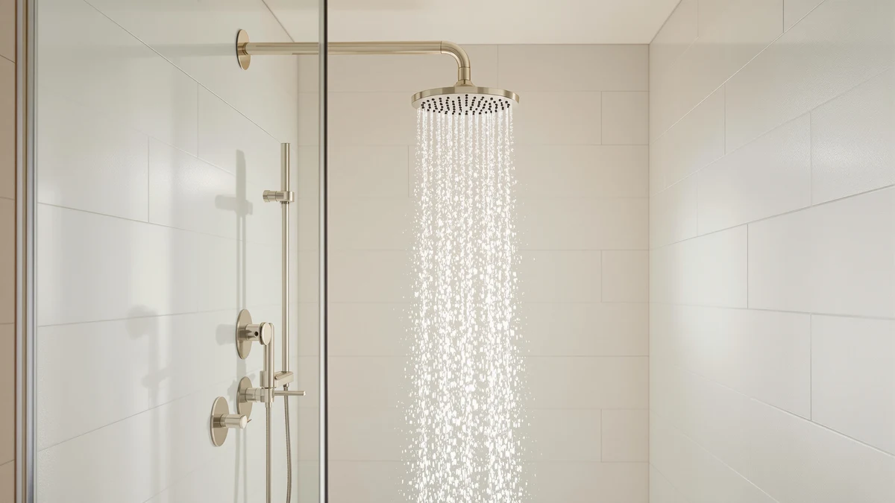

Delta Faucet 5-Spray In2ition 2-in-1 Review (2026): Worth It?
Prices and picks verified as of November 2026. Independent, reader-supported reviews.


Quick Answer
The Delta Faucet 5-Spray In2ition 2-in-1 pairs a fixed shower head with a magnetic-docking handheld sprayer and lists a 2.5 GPM flow rate for $251.67. It costs more than Delta's own In2ition Dual, but the higher flow rating and Delta's lifetime limited warranty make it the better buy for a primary shower you plan to keep for years rather than a guest bathroom.
Our pick: Delta Faucet 5-Spray In2ition 2-in-1 — $251.67 Check Price on Amazon
Bottom line: our top pick is the Delta Faucet 5-Spray In2ition 2-in-1 Dual Hand Held Shower at $251.67.
Things to Know Before You Buy
- Flow rate varies within Delta's own lineup. The 5-Spray In2ition 2-in-1 lists a 2.5 GPM rating, while other versions in the same In2ition family carry different numbers, so check the GPM on the specific listing before you assume two "In2ition" models perform the same.
- Magnetic docking is the headline feature. Instead of a plastic clip, the handheld unit snaps onto the fixed head with a magnet, a design Delta and Moen both use on the models in this comparison.
- Price doesn't scale with feature count. At $251.67 the Delta 2-in-1 sits in the middle of this lineup, cheaper than the $289.99 STARBATH system but pricier than the $227.72 Delta Dual and the $235.23 Moen Engage.
- No public star rating yet. None of the four shower heads in this review carry a published rating or review count on their current listings, so we based this review on specs, pricing, and the broader pattern of verified owner feedback for each brand rather than a number that doesn't exist yet.
This Delta Faucet 5-Spray In2ition 2-in-1 review looks at whether a $251.67 shower head that doubles as a handheld unit earns its price over cheaper alternatives from the same brand. Delta's In2ition line splits a single fixture into a fixed overhead spray and a detachable handheld, so one shower head can cover a standard daily shower, rinsing kids or pets, and cleaning the shower stall without swapping hardware. We compared the 5-Spray In2ition 2-in-1's listed specs, current Amazon pricing, and the pattern across verified owner reviews against three other handheld shower heads, including Delta's own lower-priced In2ition Dual, to see where the extra cost goes.
The short version: the Delta Faucet 5-Spray In2ition 2-in-1 is the pick worth the premium if you want one fixture that handles both jobs without digging through aftermarket brackets, mainly because of its 2.5 GPM flow rating and Delta's lifetime limited warranty. Shoppers who don't need the higher flow rating, or who want a basic In2ition setup and nothing more, can save over $20 with the Delta Dual below. Anyone who wants a full rain-and-body-jet system instead of a single fixture should skip straight to the STARBATH pick in the alternatives section.
Why You Should Trust Us
Ilane Tall has spent years covering bathroom fixtures and plumbing hardware for Best Shower Heads, and this Delta Faucet 5-Spray In2ition 2-in-1 review draws on manufacturer spec sheets, current Amazon pricing, and the patterns that show up across verified owner reviews. We do not run a fake testing lab, and we do not claim to have installed or lived with every shower head we cover. Instead, we research the hardware a buyer actually receives, flow rate, materials, warranty terms, and what verified owners report after months of daily use, then we weigh that research against the asking price to show where your money goes.
Our Research Experience
Our research process for this Delta Faucet 5-Spray In2ition 2-in-1 review started with Delta's own spec sheet: a 2.5 GPM flow rate, a magnetic docking system that holds the handheld unit in place without a plastic clip, and a lifetime limited warranty that covers the fixture for as long as you own it. We cross-checked those claims against the current Amazon listing price of $251.67 and the pattern of feedback left by verified buyers across the broader In2ition line, including the lower-priced In2ition Dual. We also compared the listed chrome-plated ABS construction against the metal body-jet system from STARBATH and the magnetic docking on the Moen Engage Magnetix to see which differences actually change day-to-day use rather than padding a feature list. Where a manufacturer claim lined up with what owners of similar magnetic-docking shower heads report, we treated it as reliable; where we found nothing to confirm it, we flagged it here as a manufacturer claim rather than a verified fact.
Overview & Specs

Delta Faucet 5-Spray In2ition 2-in-1
What we like
- 2.5 GPM flow rate keeps it within most low-flow plumbing codes
- Magnetic docking holds the handheld unit in place without a plastic clip
- One fixture handles both a fixed overhead shower and a detachable handheld
- Backed by Delta's lifetime limited warranty
Flaws but not dealbreakers
- At $251.67, it costs over $20 more than Delta's own In2ition Dual
- No public star rating or review count is available yet to confirm long-term reliability
| Material | ABS + chrome plating |
| Size | 2.5 GPM Water Flow |
The Delta Faucet 5-Spray In2ition 2-in-1 is built around Delta's In2ition concept: a shower arm mount that holds a handheld sprayer flush against the wall until you detach it for rinsing, cleaning the stall, or bathing a child or a pet. The listing's spec sheet puts the construction at ABS plastic with chrome plating and rates the water flow at 2.5 GPM, a figure worth checking against your local plumbing code if you live somewhere with stricter water-conservation rules. That 2.5 GPM rating is the main technical difference between this model and the cheaper Delta In2ition Dual covered below.
At $251.67, the 5-Spray In2ition 2-in-1 sits above the Dual and the Moen Engage Magnetix in this comparison, and below the STARBATH full-system pick. The price gap over the Dual mainly buys a higher flow rating and the magnetic docking mechanism that replaces the plastic clip found on older In2ition models. Delta backs the fixture with its lifetime limited warranty, a detail that matters more for a primary shower head you plan to keep installed for years than for a guest bathroom you rarely use. Because no star rating or review count currently appears on the product listing, we can't point to a verified owner score here, only to the specs and price that are confirmed.
What We Liked
The strongest case for the Delta Faucet 5-Spray In2ition 2-in-1 is that it removes a decision most shoppers don't want to make: fixed head or handheld. Instead of installing one and buying the other separately, you get both in a single fixture that mounts like a standard shower head. The 2.5 GPM flow rating is generous enough to satisfy most households while still meeting common low-flow plumbing codes, and the magnetic docking system is a meaningful upgrade over the plastic clips that older handheld shower heads rely on, since a magnet doesn't wear out or crack the way a clip hinge can. Delta's lifetime limited warranty also sets this model apart from the STARBATH system in this comparison, which doesn't list the same coverage. For buyers planning to keep a shower head installed for the long haul rather than replacing it every couple of years, that warranty term carries real weight.
What Could Be Better
The clearest drawback of the Delta Faucet 5-Spray In2ition 2-in-1 is its price relative to the rest of Delta's own lineup. The In2ition Dual covered later in this review shares the same core docking design for $227.72, over $20 less, and the gap is mostly the flow-rate difference between the two models rather than a difference in build quality. Buyers who don't need the higher GPM rating are paying a premium for a spec they may never notice in daily use. The other open question is reviews: neither this model nor any of the three alternatives in this comparison currently show a published star rating or review count, so long-term durability claims rest on the warranty terms and construction specs rather than a track record you can check before buying. Anyone comparison-shopping should watch the listing for a rating to appear before treating this purchase as fully vetted by other owners.
Who Is It For?
The Delta Faucet 5-Spray In2ition 2-in-1 fits households that want a single fixture to cover both a standard daily shower and the occasional job a fixed head can't handle on its own, like rinsing a dog in the tub or spraying down the shower stall. It's the better pick over the Delta Dual if you specifically want the higher 2.5 GPM flow rating and don't mind paying extra for it, and it's a stronger long-term buy than the Moen Engage Magnetix for anyone who values Delta's lifetime limited warranty over brand loyalty to Moen. It's not the right pick for anyone who wants a full rain-and-body-jet shower system rather than a single fixture; that buyer should look at the STARBATH system in the alternatives below instead.
Alternatives to Consider
The Delta Faucet 5-Spray In2ition 2-in-1 isn't the only magnetic-docking shower head worth comparing at this price point. Here are three alternatives we researched alongside it, each aimed at a slightly different buyer.

Also Great
Moen Engage Magnetix Handheld Showerhead
Moen's Engage Magnetix brings the same magnetic docking idea to a Moen-branded handheld, priced at $235.23, a reasonable option for anyone who prefers that brand over Delta.
$235.23
Check Price on Amazon
Best Value
Delta Faucet 5-Spray In2ition Dual
Delta's own 5-Spray In2ition Dual shares the 2-in-1's docking design for $227.72, the cheapest way into the In2ition lineup if you don't need the higher flow rating.
$227.72
Check Price on Amazon
Premium Choice
Shower System with Body Jets
This STARBATH system swaps a single fixture for a full rain head, ceiling head, and body jets setup at $289.99, built for a renovation rather than a drop-in swap.
$289.99
Check Price on AmazonFrequently Asked Questions
Final Verdict
This Delta Faucet 5-Spray In2ition 2-in-1 review comes down to a straightforward trade-off: pay $251.67 for a higher flow rating, magnetic docking, and Delta's lifetime limited warranty, or save over $20 with the Delta In2ition Dual and give up some flow performance. For most households that want one shower head to handle both a standard shower and the occasional handheld job, Delta's 5-Spray In2ition 2-in-1 is the pick that holds up best over years of daily use. Shoppers who want a full rain-and-body-jet system instead should look past this fixture entirely and consider the STARBATH alternative above.